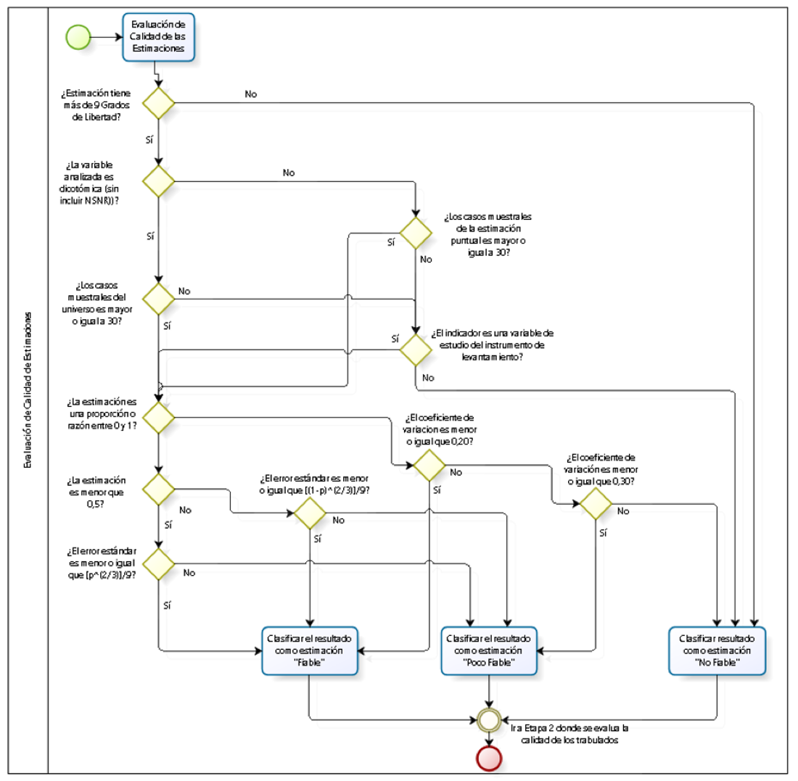

Metodología: Fiabilidad estadística y pruebas de significancia
Source:vignettes/metodologia.Rmd
metodologia.RmdEste artículo describe los criterios estadísticos que
dosr aplica para clasificar la calidad de cada estimación y
las pruebas de hipótesis disponibles para comparaciones entre años y
entre dominios geográficos.
Diseños de encuesta complejos
dosr opera sobre objetos tbl_svy del
paquete srvyr, que encapsulan el diseño muestral complejo
de la encuesta (estratos, unidades primarias de muestreo y factores de
expansión). Todas las estimaciones se calculan respetando este
diseño.
Los grados de libertad (gl) de cada dominio se calculan como:
donde es el número de unidades primarias de muestreo distintas y el número de estratos presentes en el dominio. Un valor bajo de gl indica poca información muestral independiente y es el criterio más restrictivo de la clasificación.
Criterios de fiabilidad
El siguiente diagrama muestra el árbol de decisión completo que se aplica a cada estimación:

Árbol de decisión para clasificar la fiabilidad de cada estimación.
Proporciones (obs_prop)
Los criterios se aplican en orden de prioridad:
| Prioridad | Categoría | Condición |
|---|---|---|
| 1 | Sin casos | |
| 2 | No Fiable (gl) | |
| 3 | No Fiable (muestra) | Tamaño insuficiente (ver abajo) |
| 4 | Poco Fiable (EE) | Error estándar supera el umbral |
| - | Fiable | Ninguno de los anteriores |
Criterio de tamaño muestral para proporciones:
- Variable dicotómica (2 categorías): se exige , donde es la suma de casos de todas las categorías del dominio.
- Variable con más de dos categorías: se exige en la celda.
-
universo_crit = TRUEfuerza el uso de en cualquier caso. -
es_var_estudio = TRUErelaja este criterio para variables centrales del instrumento.
Umbral del error estándar (criterio beta):
Si el EE estimado supera este umbral, la estimación es Poco Fiable (EE).
Medias, totales, razones y cuantiles
Para estas estimaciones se usa el coeficiente de variación (CV = EE / |estimación|):
| Prioridad | Categoría | Condición |
|---|---|---|
| 1 | Sin casos | |
| 2 | No Fiable (gl) | |
| 3 | No Fiable (muestra) |
(salvo es_var_estudio) |
| 4 | No Fiable (CV) | (por defecto 0.30) |
| 5 | Poco Fiable (CV) | (por defecto 0.20) |
| - | Fiable | Ninguno de los anteriores |
Parámetros configurables
Todos los umbrales son configurables en cada función
obs_*:
obs_media(
design_2022,
var = "ytotcorh",
cv_umbral_alto = 0.30, # umbral para "No Fiable (CV)"
cv_umbral_medio = 0.20, # umbral para "Poco Fiable (CV)"
n_minimo = 30L, # tamaño muestral mínimo
nivel_confianza = 0.95, # nivel de confianza para intervalos
save_xlsx = FALSE
)Pruebas de significancia estadística
Cuando se activa sig = TRUE junto con múltiples diseños,
dosr calcula tres tipos de comparaciones mediante un
test t de Welch adaptado a diseños complejos:
Los p-valores se obtienen de la distribución de Student con grados de libertad. Este enfoque es conservador: usa el mínimo de grados de libertad de los dos grupos comparados, lo que es apropiado cuando los dominios tienen estructuras de varianza distintas.
Tipos de comparación
| Tipo | Descripción | Disponible con |
|---|---|---|
| Intra-anual | Todas las categorías de una desagregación simple entre sí, para cada año | Un diseño o más |
| Contra último año | Cada categoría vs. el año más reciente de la serie | Solo con múltiples diseños |
| Contra nacional | Cada categoría vs. el total nacional del mismo año | Con desagregación activa |
Las tablas de p-valores se escriben en hojas adicionales del Excel de formato. Un p-valor < 0.05 indica diferencia estadísticamente significativa al nivel de confianza configurado.
Salida: estructura del reporte Excel
Cuando save_xlsx = TRUE, el archivo generado contiene
dos tipos de hojas:
Hoja
1_Consolidado: tabla completa con todas las estimaciones y métricas de calidad (estimación puntual, error estándar, CV, N muestral, N expandido, fiabilidad) para cada combinación de desagregación solicitada.Hojas de formato (
2_nac,2_{variable}): presentación lista para publicar, con bloques separados por métrica. Cuandosig = TRUEy hay múltiples diseños, se agregan tablas de p-valores para las tres comparaciones descritas arriba.
Ver capturas de pantalla de ambos tipos de hoja en la página principal del sitio.
Ejemplo con datos reales
library(dosr)
library(srvyr)
#>
#> Attaching package: 'srvyr'
#> The following object is masked from 'package:stats':
#>
#> filter
design_2022 <- as_survey_design(casen_2022, ids = varunit,
strata = varstrat, weights = expr, nest = TRUE)
# Pobreza extrema por sexo, CASEN 2022
resultado <- obs_prop(
design_2022,
sufijo = "2022",
var = "pobreza",
des = "sexo",
porcentaje = TRUE,
categoria = "Pobreza extrema",
save_xlsx = FALSE,
verbose = FALSE
)
cols <- c("sexo", "prop_2022", "se_2022", "n_mues_2022", "fiabilidad_2022")
resultado[resultado$nivel != "Nacional", cols]
#> # A tibble: 2 × 5
#> sexo prop_2022 se_2022 n_mues_2022 fiabilidad_2022
#> <fct> <dbl> <dbl> <int> <chr>
#> 1 1. Hombre 7.80 0.158 8595 Fiable
#> 2 2. Mujer 9.14 0.169 11236 FiableComparación inter-anual con pruebas de significancia
design_2024 <- as_survey_design(casen_2024, ids = varunit,
strata = varstrat, weights = expr, nest = TRUE)
# Ingreso medio del hogar por área urbano/rural, 2022 vs. 2024
serie <- obs_media(
designs = list(design_2022, design_2024),
sufijo = c("2022", "2024"),
var = "ytotcorh",
des = "area",
sig = TRUE,
save_xlsx = FALSE,
verbose = FALSE
)
cols_serie <- c("area", "media_2022", "media_2024",
"fiabilidad_2022", "fiabilidad_2024")
serie[serie$nivel != "Nacional", cols_serie]Referencias
- Lumley, T. (2010). Complex Surveys: A Guide to Analysis Using R. Wiley.
- División Observatorio Social, Subsecretaría de Evaluación Social, Ministerio de Desarrollo Social y Familia (2023, actualizado marzo 2024). Manual para la Investigación. Guía práctica para el uso y análisis de información. Casen 2022. Santiago: Ministerio de Desarrollo Social y Familia. https://observatorio.ministeriodesarrollosocial.gob.cl/storage/docs/casen/2022/Manual_para_la_investigacion_Casen_2022(18marzo2024).pdf
- Valliant, R., Dever, J. A., & Kreuter, F. (2018). Practical Tools for Designing and Weighting Survey Samples (2nd ed.). Springer.